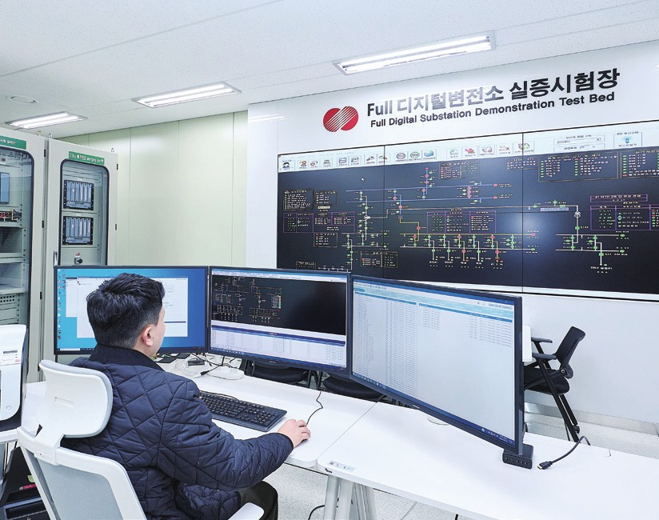
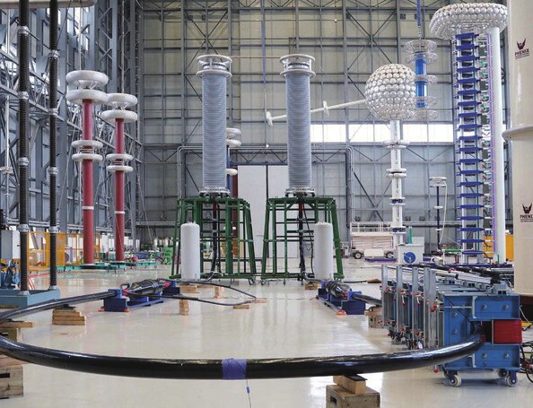
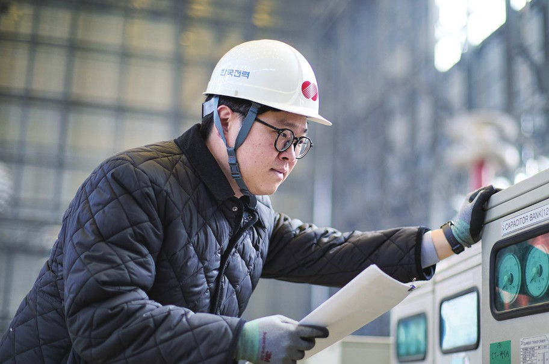
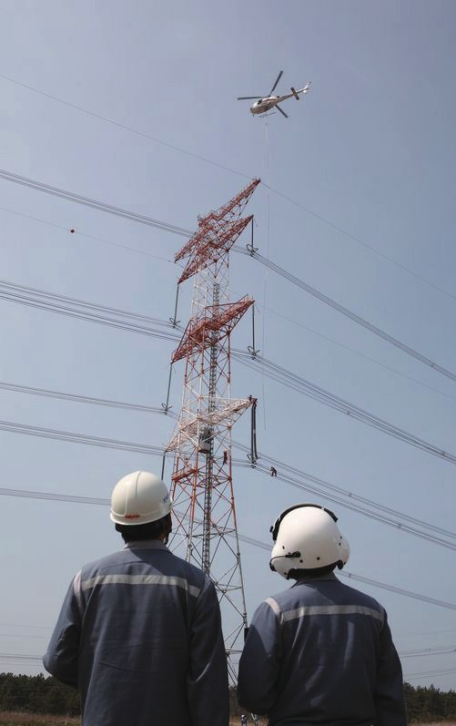
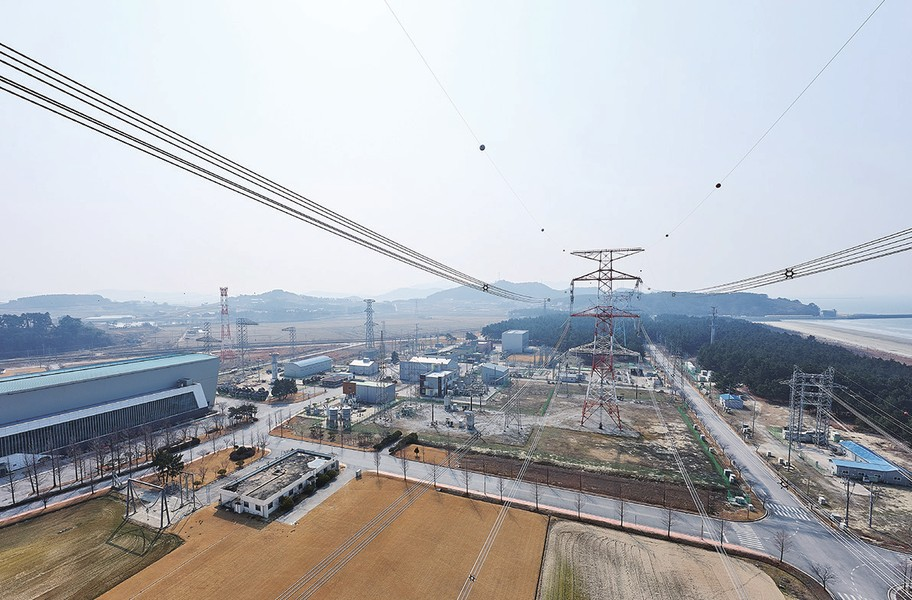
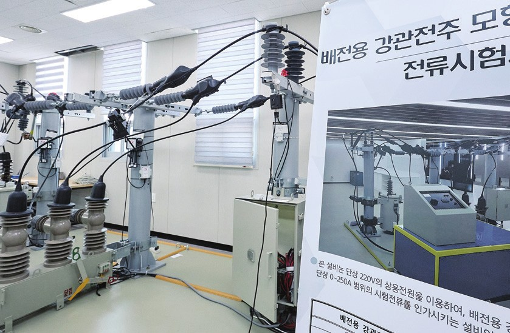

3줄 요약
- 고창전력시험센터는 송변전·배전·신재생 등 31개 시험장에서 신기술을 실 계통에 적용하기 전에 실증하고 인증하는 종합 실증시험센터다.
- HVDC 실증시험장은 ±500kV 초고압직류 기술 국산화와 케이블 국제공인시험을 맡고, 765kV 실증선로는 1993년 센터 출범의 출발점이 됐다.
- 국제 인증과 실증을 함께 운영하는 기관은 한전이 유일해, 국내 제조사는 해외에 가지 않고도 인증을 받을 수 있다.
백년대계라는 말이 있다. 시간을 넘고 시대를 넘어 먼 미래를 내다보는 시선을 일컫는다. 그 어느 때보다 변화의 유속이 빠르기에 백년대계가 더욱 중요한 시대다. 오늘의 한 걸음이 미래의 엄청난 격차를 불러올 수 있기 때문이다. 백년대계의 기술이 태어나고 있는 현장, 고창전력시험센터를 가보았다.
‘고창’하면 상하목장만 떠올리시는 분들은 주목하시라. 상하목장 바로 옆에 대한민국 백년의 미래를 밝히기 위한 최첨단 에너지기술을 태동시키는 산실, 고창전력시험센터가 자리해 있다.
구시포 해안가에 자리 잡은 74만 967㎡, 약 23만 평 광활한 부지의 고창전력시험센터에 대한민국 전력기술의 정수가 집약되어 있다.

에너지고속도로의 핵심축, HVDC 실증시험장
맨 먼저 미래전력망의 핵심설비인 HVDC(초고압직류송전) 실증시험장으로 가보았다. 미래의 연구실에 들어온 듯 생소한 첨단설비들로 가득한 HVDC 실증시험장은 케이블 실증시험장과 가공 실증시험장으로 구성돼 있다.
가공 실증시험장은 ±500kV 초고압직류(HVDC)기술 국산화와 신뢰성 검증을 위해 구축되었으며, 국내 환경에 적합한 HVDC 기자재 개발 및 상용화에 활용되고 있다.
케이블 실증시험장은 HVDC 케이블 연구와 시험을 위해 2021년에 구축됐다. HVDC케이블 운영 진단 신기술 개발, 케이블 절연 평가 및 규격 정립 실증시험이 이루어지고 있다. 또한 국제인증(KEMA)이 가능한 인프라가 구축돼 있어 DC 800kV급까지 동시에 2개 선로의 국제공인시험이 가능하다. 최근 HVDC 고장점 탐지기술로 미국 EPRI에서 최우수 기술상을 수상하면서 기술력을 인정받는 등 해외사업화도 활발히 추진한다.
국제적 인증과 실증을 동시에 수행
고창전력시험센터는 연구성과물, 전력기자재 및 시스템, 신개발 기술을 현장에 적용하기에 앞서 실증을 통한 검증과 보완으로 완성도를 높이고, 실 계통에 적용할 때 발생할 수 있는 리스크를 줄이도록 돕는 종합 실증시험센터로서 활약하고 있다.
송변전 12개소, 배전 7개소, 신재생 4개소, 기타 8개소로 총 31개의 시험장을 운영하고 있다. 초창기에는 전력공급 안정화를 위해 송변전 및 배전 분야 실증시험 위주로 시험장이 구축됐으며, 2010년 이후로 신재생에너지, 디지털실증, 초고압케이블 및 변전설비 인증시험 등이 추가되어 실증과 인증을 모두 수행할 수 있는 종합전력시험센터의 면모를 갖췄다. 보유설비를 활용하여 KOLAS¹, KEMA 등 국내는 물론 국제 시험자격 인증을 수행하는데, 자체 성과물뿐 아니라 외부 요청 인증도 수행하고 있다. 국제적으로 인증 및 실증을 동시에 운영하는 기관은 한전이 유일하다. 이전에는 전력 설비 상용화에 필수적인 국제 인증을 받으려면 전력설비를 싣고 해외에까지 가야 했는데 이를 고창시험센터에서 수행함으로써 국내 전력설비 생산업체들로서는 막대한 시간과 비용을 절감할 수 있다.



특히 고창전력시험센터는 R&D성과물을 실제 환경과 유사한 조건 또는 그 이상의 시험환경을 연구자가 원하는 대로 구축해 사전 성능검증이 가능하도록 하는 모의 실증환경을 보유하고 있다. 게다가 외부망과 분리된 조건에서 실증테스트를 시행하므로 외부로 피해나 파급 영향이 전혀 없이 모의고장과 극한 환경 노출 등 다양한 필드 테스트가 가능하다는 장점이 있다.
고창전력시험센터의 역사가 시작된 곳, 765kV 송전선로 실증시험장


다음은 765kV 송전선로 실증시험장으로 향했다. 이곳 765kV 송전선로 실증시험장은 고창전력시험센터가 태동한 본산으로 대한민국 전력 자립의 역사가 서려 있다.
1980년대 당시, 전력당국은 매년 10%의 급격한 전력수요 증가를 기존 전력망으로 감당하기 어려워져 765kV 송전선로 도입을 결정했다. 문제는 장소였다. 강풍, 염해, 폭설 등 극한 환경의 실증시험 조건을 만족시킬 수 있는 부지를 찾아야 했다. 때마침, 영광원자력발전소 건설로 공군사격장이 이전하며 유휴부지로 전환된 고창군 상하면 부지 위에 765kV 실증선로를 구축했다. 그리고 1993년에 실증선로가 완공되어 마침내 765kV 송전 기술 국산화의 꿈을 이루어냈으며, 종합적이고 본격적인 전력기술 실증을 전담하는 고창전력시험센터가 출범했다.
이곳엔 22.9kV를 765kV로 승압하는 변전설비와 765kV 철탑 6기로 구성된 1km 규모의 실증선로가 구축돼 있다. 이는 철탑구조, 기초, 전선, 금구류 등의 규격 및 기자재 실증에 활용돼왔고, 신태백~신가평선로 등 전력 설비의 설계기준을 제시하고 기술기준을 검증하는 데에 기여하고 있다. 이곳엔 철탑 상부까지 올라갈 수 있는 승강기가 있어, 국내 최고 전압의 송전철탑에 올라 견학하는 기회를 제공한다. 승강기를 타고 철탑꼭대기에 오르면 지상보다 세찬 바람에 놀라고, 765kV선로를 따라 고창전력시험센터와 바다를 한눈에 조망할 수 있는 풍광에 놀란다.
배터리에너지저장장치(BESS)² 실증시험장

배터리에너지저장장치 보급이 확대되면서 다목적 통합운영기술 고도화와 신규 사업모델 검증을 위해 구축된 배터리에너지저장장치(BESS)시험장. 이곳에는 주파수 조정 ESS의 1개 변전소급인 28MW급 ESS 제반 설비와 1MW급 슈퍼커패시터 등이 도열해 있다.
이 설비들은 전력계통 주파수 조정과 계통 안정화용 ESS 운영기술 개발에 활용됐고, 1MW급 슈퍼캡 및 슈퍼캡-배터리 협조운전 실계통 연계 실증에 기여했다. 이 실증시험장에서 얻어진 결과를 바탕으로 해외 아일랜드 보조서비스 시장 진출을 위한 슈퍼캡 국제공동 현지실증 프로젝트를 추진하며 신사업 기반을 마련하고 있다.
이밖에도 고창전력시험센터에는 저압직류(LVDC) 배전실증시험장, 변전설비 종합실증시험장, 태양광발전실증시험장, DC시험장, 전자파저감실증시험장 등이 구축되어 있다. 고창전력시험센터는 에너지대전환을 성공적으로 이루고 미래에너지전력망을 구축하는 데 중요한 기술과 설비들을 실증과 인증하며 미래 기술의 메카로서의 사명을 톡톡히 감당하고 있다.